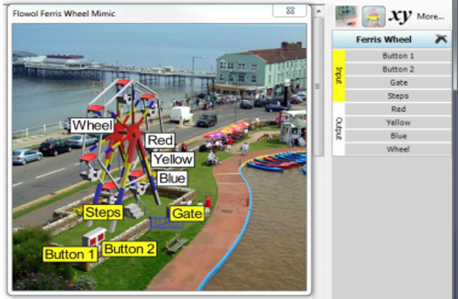
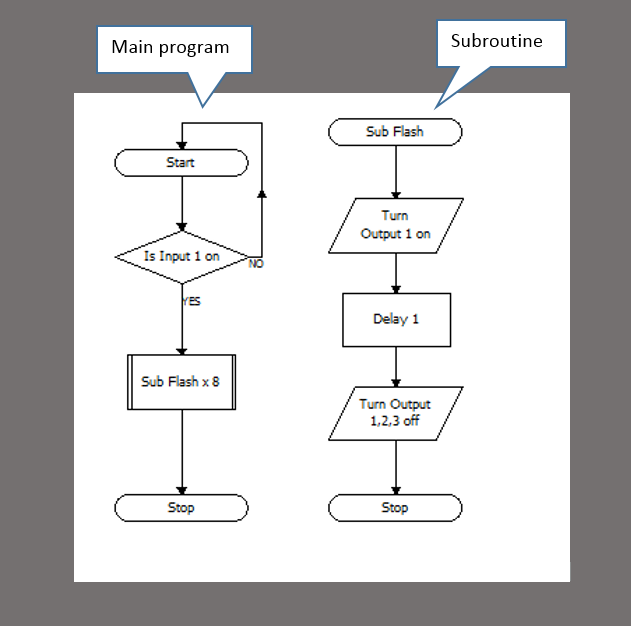
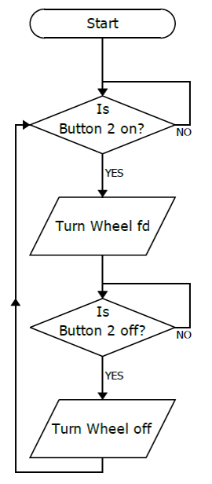
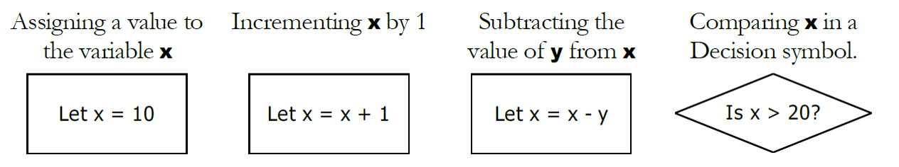
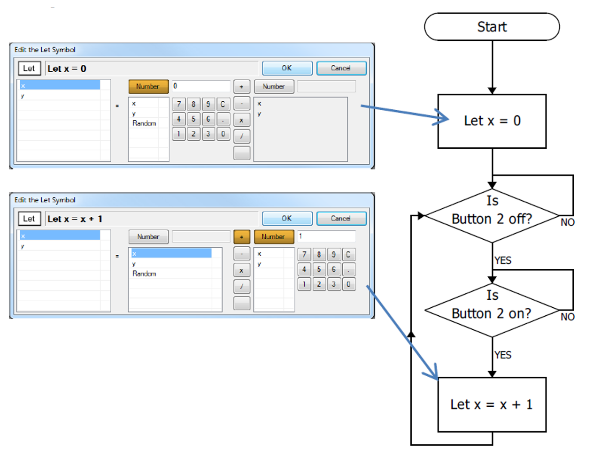

Iteration and Variables
Grey overlay
Pink
Green
Blue
Cream
Liliac
Purple
Yellow
1 Objectives
Developing Algorithms learning strand, specifically:
- learn how to represent algorithms using flowcharts
- Understand how alogrithm design can help solving complex problems
Developing Programming and Development learning strand, specifically:
- implement solutions using iteration and variables
- develop further understanding that programming bridges the gap between algorithmic solutions and computers
2 Iteration
Learn It - Iteration
- Last lesson we looked at how selection is used to decide what do do based on the state or value of certain items.
- Today we are going to continue to use Flowol to use iteration to do tasks over and over again.
- To do this with flowcharts and Flowol we use the lines and arrows to loop back to a previous flowchart shape.
- This allows us to repeat something for an unlimited amount of times or just for a set amount.

- In the image above you can see that after the Delay 2 the line and arrow go back to Is Sun Off. This is a loop.
Badge It - Silver
- Open the 'Big Wheel' mimic from the mimic menu in Flowol.
- Explore what the mimic can do by clicking on the inputs, outputs and motors on the Status Panel.

- Take some time to understand the four different inputs.
- Button 1 and Button 2 are normal inputs but, when the wheel is rotating, you may notice that the Steps input flashes on each time a seat passes over the steps. Also, if you click on the Gate with the left mouse button you will find that the Gate input comes on when the gate is shut.
- The Steps and Gate inputs are called virtual inputs. They cannot be changed by directly clicking on the mimic, but are changed by features within the mimic itself.
Task 1 - To attract the crowd, use the Button 1 input to control the lighting effects on the wheel's frame. This might be a simple on/off routine but flashing sequences are more exciting. Use subroutines.
- Use the image below as a base for your task, you will need to change the input and output names.
 Task 2 - Use the Button 2 input to control the simple Go/Stop movement of the wheel. You could perhaps make the wheel speedup and slowdown in stages by changing the motor power.  Task 3 - Modify task 2 to include the safety feature of the gate so that the gate must be closed before the wheel will start (i.e. both Button 2 and Gate are on). The wheel should stop if either Button 2 is turned off, or the Gate is opened (i.e. if either Button 2 or Gate are off).
- When you have finished the task try it out by clicking the play button and interacting with the wheel to test that it works.
- Then screenshot your flowcharts and upload your work to the Silver badge task on Week 7 of Problem Solving on Bourne to Learn.
- Before you move on make sure to save your Flowol work into your Computer Science/Year 8/Problem Solving folder as "Week 7 Iteration Silver".
3 Variables
Learn It - Variables
- As well as sequencing, selection and iteration another important concept we need to know in programming is about variables.
- Computer programs use variables to store information, which we can change later in the program.
- Variables could be used to store the score in a game, the number of cars in a car park or the cost of items on a till. They work in a similar way to algebra, where a letter in your code can stand for a number.

- In the image above you can see how we make a variable, change it and use a decision block to check it.
Badge It - Gold
Learning Strand: Algorithms
In the same "Big Wheel" mimic file you were using for Silver we are now going to add variables.
Task 1 - Use variable x to count how many times the ride is used. This could be done either by adding the increment Let instruction to the existing flowchart from the Silver task, or by creating a separate flowchart, as shown here.
 Task 2 - Construct this counting program to increase the variable y each time a seat passes the steps, i.e. each time the virtual input goes off and on.
- Since there are 7 seats, each rotation of the wheel should increase the variable y by 7.
- Now modify your program by introducing a decision symbol, to stop the wheel automatically after it has rotated 3 times.
Task 3 - Now that you have learned how to use the Steps input, create a subroutine which rotates the wheel and stops briefly at each of the seven seats for passengers to get on or off. Call this subroutine twice; once at the beginning to load the wheel with passengers, and then at the end to unload.
- Test out your flowcharts by clicking the play button and using the buttons to see that your flowcharts work.
- Upload your completed flowcharts to www.bournetolearn.com, Week 7 Gold for Problem Solving.
Badge It - Platinum
Learning Strand: Algorithms
Changing the Speed of a Motor with a Variable
- To keep passengers safe the wheel should gradually speed up and slow down.
- While it is possible to change the speed with a sequence of Output symbols with speeds of 10%, 20%, 30% etc. it is much more compact and reusable to employ a variable.
- Create the new variable s and use a speed of s% in the output symbols in the subroutines.
- When running the program, observe the Wheel motor in the status panel. The size of the bar indicates the speed of the motor.
- If you need help then click here for a hint.
- Test out your flowcharts by clicking the play button try to speed up and slow down your big wheel.
- Upload your completed flowcharts to www.bournetolearn.com, Week 7 Platinum for Problem Solving.
{kind=link}